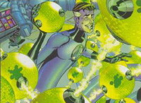
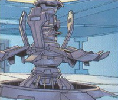
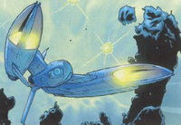
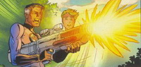

Рид Ричардс, лидер Фантастической Четверки, способен растягивать, сжимать или увеличивать свое тело в любую форму. Кроме того, он талантливый ученый, изобретший приборы от лучевого оружия до телепортационных устройств. Рид создал Фантастическую Четверку после катастрофы во время межзвездного полета, когда космические лучи наделили весь экипаж мутагенными изменениями. Мистер Фантастик переживал о случившемся, уверенный в том, что все произошло по его вине. Благодаря своим выдающимся знаниям, суперсиле и лидерским качествам он провел Фантастическую Четверку через множество открытий и приключений.
Единственный сын состоятельного физика и его жены, Рид Ричардс всегда был причудливым. С детства одаренный удивительными способностями в области математики, физики и механики он стал известен как умнейший человек на планете. Поддерживаемый и ведомый своим отцом, Рид поступил в колледж, когда ему было всего 14. Он посещал несколько университетов - среди них Калифорнийский технологический институт, Колумбийский университет, Гарвардский университет и Университет штата Нью-Йорк.
Уже в юности Рид посвятил себя межзвездным путешествиям. Работая после университета авиационным инженером, он проводил много времени в попытках построить и запустить космический исследовательский корабль. Когда правительство пригрозило прекратить финансирование проекта, Рид столкнулся со смертью мечты всей его жизни. Но он понимал, что его творение ускорит возможность путешествия далеко в солнечную систему и позволит защитить Землю от инопланетных угроз.
В отчаянии, Рид решил провести немедленный, запрещенный пробный полет со свои лучшим другом Беном Гримом, бывшим пилотом и астронавтом, невестой Сью Шторм и ее братом Джонни. Космические лучи подвергли их тела мутагенным изменениям. Несмотря на их первоначальный страх, Рид сумел убедить их объединиться и использовать уникальные способности во благо человечеству.
Хотя он известен как бесстрашный лидер Фантастической Четверки и один из выдающихся умов планеты, Рид очень скромен и имеет самокритичный взгляд на свои решения и поступки - особенно на тот роковой полет в космос, подвергший его друзей опасности. Для мира Мистер Фантастик гений, который регулярно переписывал Hawking и декодировал инопланетные языки. Но с другой стороны, Рид выглядит как самоуверенный человек, совершающий глупые поступки. Вина Рида, повлекшая инцидент была невыносимой и, по его мнению, заслуженной. Его друзья были обречены стать изгоями, объектами для исследования, а возможно, еще хуже. Поэтому Рид решил действовать в тайне. Он подарил им костюмы, летающую машину и дом в Нью-Йорке и дал необычные имена: Женщина-Невидимка, Нечто и Человек-Факел. Рид думал, что придав своим друзьям популярности, он может быть прощен за их испорченные жизни. Когда-нибудь...
Мистер Фантастик способен перестраивать свое тело в разнообразную форму. К примеру, он может растягиваться, изменять форму, увеличиваться или сжиматься в любой предмет какой он может представить.
Изобретения Рида Ричардса, патенты которых составляют основной доход Фантастической четверки, варьируются от дико необычных до крайне необходимых, включая такие важные изобретения как лучевое оружие, универсальный средства передачи и устройства телепортации. Его откровенное мышление и чувство разума главное, что есть у Фантастической Четверки.
- Очень пластичное тело
- Научный гений
Оружие: Нет
РОБОТЫ
Прежде всего, стоит упомянуть "домашнего робота" по имени Герби, встречающего посетителей Здания Бакстера. В отличии от обыкновенных живых секретарей, изобретение Рида подключено к единой компьютерной сети здания и может летать. В подчинение у главного робота находятся несколько сотен маленьких, но очень прытких и злобных роботков-охранников, "отстреливающих" непрошенных гостей электричеством.
МЕДИЦИНСКИЙ КОМПЛЕКС
Он поистине "всемогущий"! Сложнейшая диагностическая аппаратура позволяет распознать любую болезнь, а препораты, в том числе воздействующий на ДНК, способны поставить на ноги даже самых безнадежных больных.
ТЕЛЕПОРТАТОР
Одно из главных изобретений Рида Ричардса - устройство, позволяющее моментально перемещать человека в любую точку пространства. Любопытно, что для создания канала телепортации достаточно лишь отправляющего устройства, а "пункт приема" на другом конце канала не требуется.
ТРАНСПОРТ
В распоряжении "Фантастической Четверки" - целый парк транспортных средств: от корабля способного путешествовать между мирами, до легкого кабриолета для полетов в магазин...
ОРУЖИЕ
У супергероев хватит оружия для отражения любой атаки: есть лазерные ружья, энергетические пистолеты, электромагнитные пушки... Пушка, например, создает мощные магнитные импульсы, выводящие из строя всю электронику в радиусе нескольких километров.
НЕГАТИВНАЯ ЗОНА
Еще столетия назад ученые были уверены: для всех частиц должны существовать античастицы. А раз должны, значит и существуют! В 1955 году юыли обнаружены антипротоны, а в 1956 году был открыт антинейтрон. М поскольку наша вселенная, как известно, состоит из вещества, то должна быть и антивселенная. Вот до нее-то Рид и добрался! Попасть в эту вселенную, названную "Негативной Зоной", позволяет портал, оснащенный оборудованием для трансформации материи в антиматерию и устройством для телепортации.
Наверх